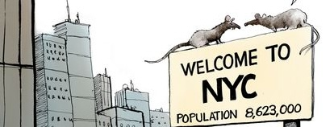
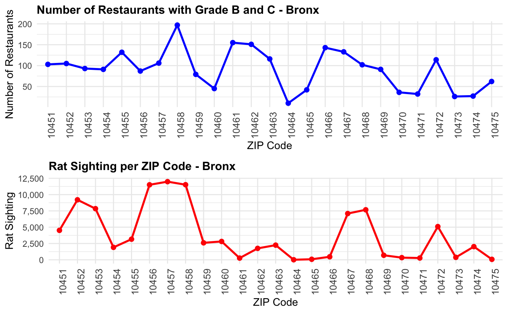
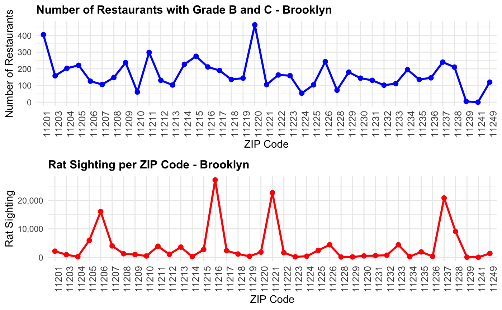
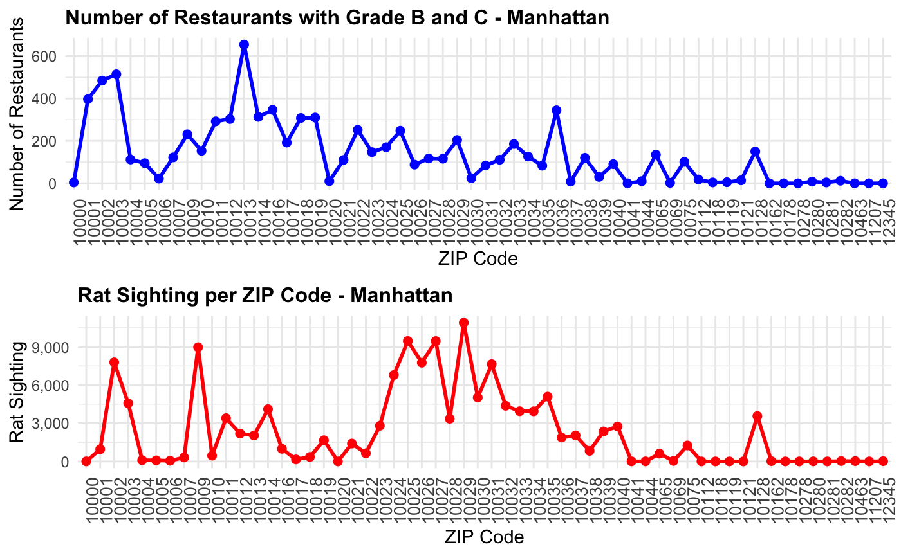
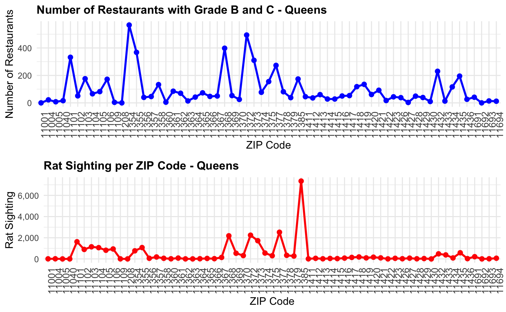
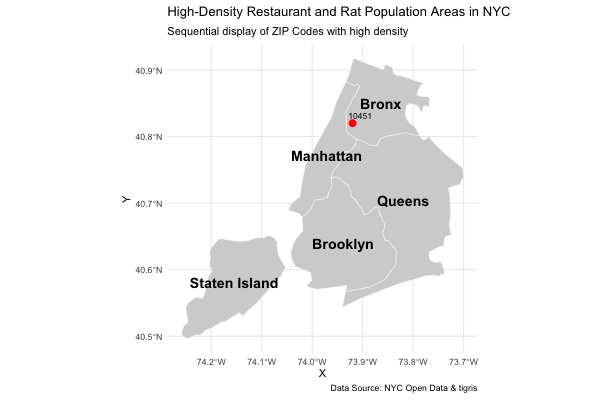

Do restaurants play a significant role in contribution to rat infestation?
If you look around New York City today, it feels like rats are everywhere—almost as if we’re living in their city and not the other way around. So, how exactly do restaurants contribute to this growing urban emergency among other factors?
To explore this question, we used the DOHMH New York City Restaurant Inspection Results and Rats activity recorded in restaurants by borough data sets. These data sets were ideal for our analysis as they provided comprehensive information on restaurant sanitation grades, violations, and rat activity inspections across neighborhoods. The restaurant inspection data allowed us to focus on establishments with poor sanitation (Grades B and C), while the rat activity data captured sightings and inspection outcomes, enabling us to analyze trends at the ZIP Code and borough levels. Together, these datasets helped us identify where rat infestations are most prevalent and how they correlate with restaurant density and hygiene practices.
However, there are limitation to these open sources. First, the rat activity data reflects only inspected areas, which can create bias by making neighborhoods with more inspections appear to have higher rat densities, even if that isn’t the case. Second, both data sets contain incomplete records, such as missing ZIP Codes, sanitation grades, or inspection outcomes, which required filtering and cleaning that may have excluded some valuable data points. Lastly, there are time gaps and reporting inconsistencies between restaurant inspections and rat activity reports, making it difficult to perfectly align the data and establish direct cause-and-effect relationships.
Poor restaurant sanitation
After cleaning and combining the datasets, we focused on restaurants with Grades B and C across various ZIP Codes in NYC boroughs. By filtering violation descriptions and mapping these to rat activity data, we aimed to uncover how poor restaurant sanitation correlates with increased rat infestations in these areas. Let’s dig deeper into the findings to understand this relationship further.

In the Bronx, ZIP codes 10457 and 10458 show high rat densities (over 12,000), which aligns with a significant concentration of lower-graded restaurants, suggesting a strong connection between poor sanitation and rat activity.

Brooklyn, particularly ZIP codes 11215 and 11222, reports the highest rat densities (over 20,000), indicating that localized waste management challenges may exacerbate the problem.

In Manhattan, ZIP codes 10013 and 10036 have the most Grade B and C restaurants (over 600), yet rat activity remains moderate, likely due to more effective urban sanitation practices.

Queens shows notable peaks in rat density, especially in ZIP codes 11385 and 11373, which also have a high concentration of poorly graded restaurants.

Staten Island reports the lowest rat activity, with ZIP code 10301 showing minimal infestations despite fewer sanitation issues.

From our graph above we can observe that rat infestations are not uniformly distributed across NYC boroughs, with higher activity observed in areas with a greater number of poorly graded restaurants (Grades B and C).
Overall, the findings highlight that rat activity tends to cluster in specific ZIP codes where restaurant sanitation is poor. While Manhattan demonstrates moderate rat activity despite high restaurant density, Brooklyn and the Bronx exhibit a stronger correlation between lower sanitation grades and increased rat infestations. Staten Island remains a notable exception, reflecting better sanitation and waste management outcomes. These insights emphasize the need for targeted interventions, such as enhanced sanitation inspections and improved waste management practices, particularly in ZIP codes with higher concentrations of Grade B and C restaurants.
Outdoor dining

The visual representation, combining a bar graph and a line graph, highlights the relationship between outdoor seating violations and rat infestations in NYC. The bar graph shows a steady increase in outdoor seating violations post-COVID, particularly from 2022 to 2024, with the highest violations recorded in 2024. Simultaneously, the line graph reveals a consistent upward trend in rat infestations near outdoor seating areas, which sharply rises in 2023 and 2024. This correlation suggests that as outdoor seating violations increased, rat infestations also surged, likely due to improper waste management and expanded food availability. The findings emphasize the need for stricter sanitation protocols to manage outdoor dining spaces and reduce rat activity in NYC neighborhoods.
The article “The new Normal, Ah!! Rats!! by Elazar Sontag in Eater (December 14, 2021) supports my analysis by highlighting how the reopening of restaurants and the rise of outdoor dining post-COVID-19 contributed to a resurgence of rat infestations in New York City. During the peak of the pandemic, rat populations initially declined due to reduced food availability caused by restaurant closures. However, with the return of outdoor dining and street-side cooking, food waste became abundant, creating ideal conditions for rats to thrive. This aligns with my findings, which show a clear correlation between outdoor seating violations and increased rat activity after 2022. The article further emphasizes that the issue extends beyond NYC, as other cities like Chicago, Los Angeles, and New Orleans have reported similar increases in rat sightings, underscoring the need for stricter sanitation measures to address these challenges effectively.
Restaurant Density in a neighbourhood

From the graph above we can see a positive correlation between restaurant density and the number of rat activity inspections across NYC boroughs. Boroughs with higher restaurant density, such as Manhattan and Brooklyn, also report significantly higher rat activity, with Manhattan having approximately 94,661 restaurants and 136,963 inspections. This suggests that concentrated restaurant activity may contribute to increased rat infestations due to greater food waste generation. In contrast, Staten Island, which has the lowest restaurant density (~9,218 restaurants), also reports the fewest rat activity inspections (~2,049), supporting the trend that lower restaurant density aligns with reduced rat activity. However, the Bronx stands out as an outlier, with higher rat activity inspections (~96,498) relative to its moderate restaurant density (~23,274 restaurants), indicating that additional factors, such as waste management issues or urban infrastructure challenges, may be at play. These findings emphasize the need for targeted waste management policies in high-density boroughs like Manhattan and Brooklyn, while further investigation is needed to understand the unique challenges driving rat infestations in the Bronx.
Conclusion
The analysis highlights a clear correlation between restaurant practices and rat infestations in NYC neighborhoods. Poor restaurant sanitation (Grades B and C), increased outdoor dining violations, and high restaurant density are significant contributors to rising rat activity, particularly in boroughs like Brooklyn, the Bronx, and Manhattan. While Staten Island shows minimal rat infestations due to lower restaurant density, the Bronx stands out as an outlier, indicating other factors may be at play. These findings emphasize the urgent need for stricter sanitation protocols, improved waste management practices, and targeted interventions in high-risk areas to address the growing rat infestation issue effectively.